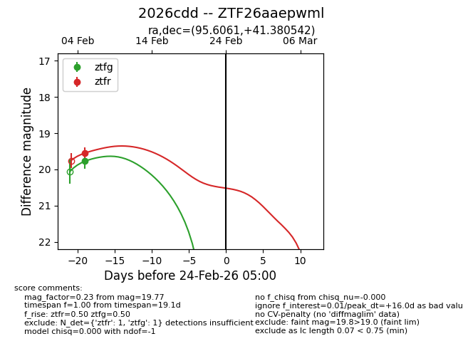
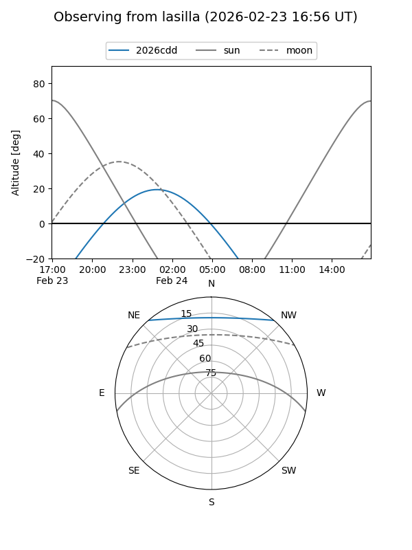
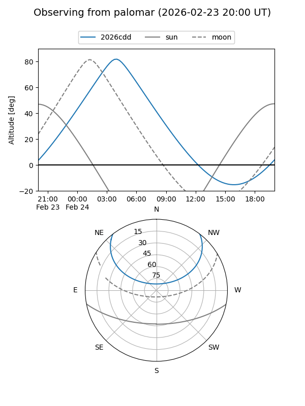

2026cdd
Target 2026cdd at 2026-02-24 09:08
Aliases and brokers:
FINK: link
Lasair: link
ALeRCE: link
TNS: link
YSE: link
alt names
ZTF26aaepwml (ztf,fink_ztf)
2026cdd (tns,yse)
Coordinates:
equatorial (ra, dec) = 95.6061,+41.38054
equatorial (HMS+DMS) = 06:22:25.47,+41:22:49.95
galactic (l, b) = (172.6189,+12.53982)
Flags:
Photometry:
last ztfg=19.77, ztfr=19.55
1 ztfg, 1 ztfr detections
Lightcurve

Visibility


Additional plots